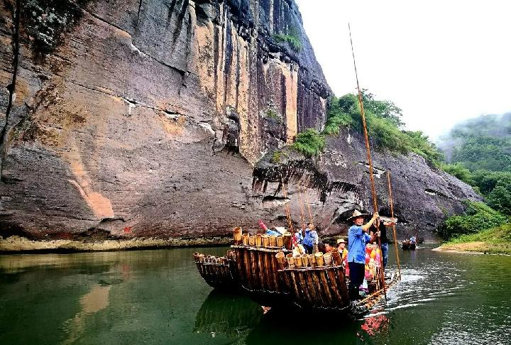
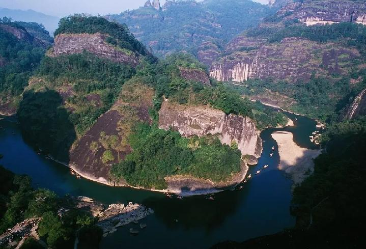
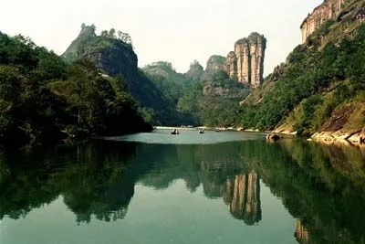

景点介绍
九曲溪景区起于武夷山市星村镇筏游码头，止于九曲溪的终点——一曲溪畔的武夷宫。因景区内有九曲溪萦绕、贯穿而得名。
（宋）· 李 纲
武夷古洞天，奇峰三十六。
一溪贯群山，清浅萦九曲。
溪边列岩岫，倒影浸寒绿。
翩如鸾凤翔，矫若虬龙蹙。

九曲溪漂流，是武夷山旅途中不容错过的一站。清澈的溪水是武夷山的灵魂，乘坐在宽2米、长9米的古朴竹筏荡入山光水色之中，如融入神话般的境界，令人心旷神怡，两岸的景致慢慢向后移动。波光潋滟，群山井走，有一种“人在画中游”的感觉。悬崖峭壁上挂着拥有三千年历史的“武夷灌木”，悠远而神秘。唯美与刺激的碰撞，使九曲溪漂流在休闲中更像是一次探险之旅。
漂流一般是从九曲到一曲顺流而下，这样随波逐流，更加轻快、迅疾。游九曲，所乘之舟为8－9根去皮毛竹烤后扎成。吃水浅、浮力大，游人乘坐安稳舒适，视野开阔，可见山景，能赏水色，九曲溪漂流而下既轻松惬意，又有惊无险。

这一段河道溪水澄碧清澈，傍山而流，穿涧而过，山回溪转，折复绕山，山溪相环，九折万状。两岸千峰可尽收眼帘;翠岚倒影，也可尽显于碧波之中。

九曲溪两岸的峰岩还具有“移舟换景”的特点。同一山峰处在不同曲水的视点下，往往变幻为不同的景观，而峰名也因之而异，形成这个景区最大的特色。
地理位置：武夷山市星村镇竹筏码头
交通方式：9路公交、的士
竹筏票价：130元/人